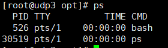
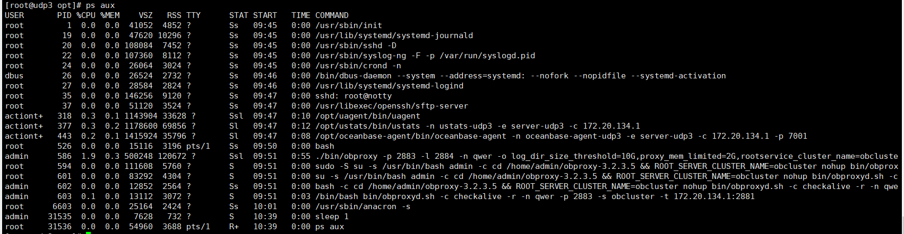
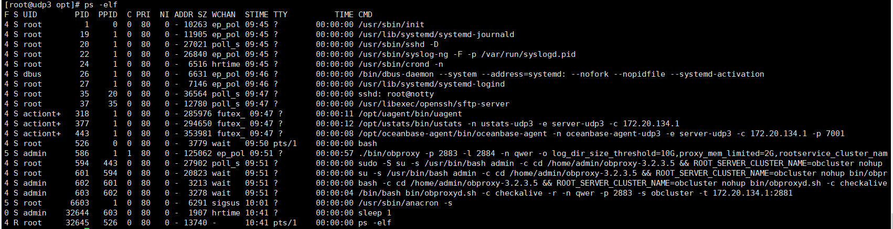
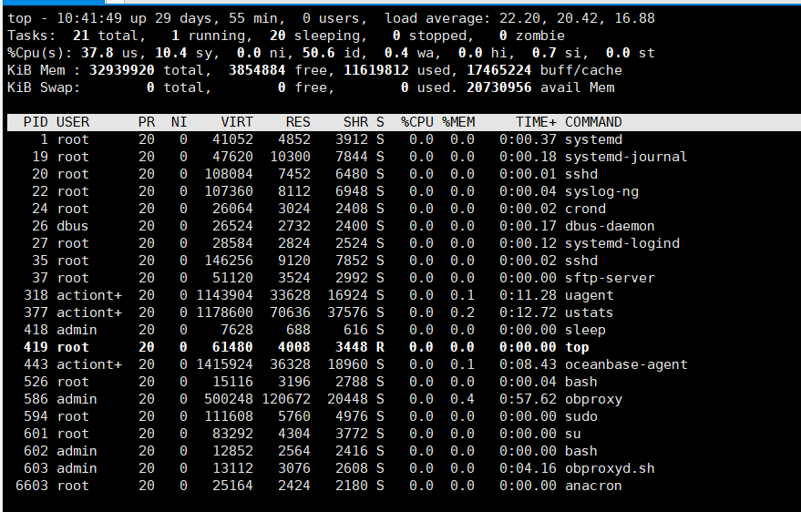

linux系统进程相关笔记
查看进程
ps

ps aux

ps -elf

字段说明：
- USER：启动该进程的用户账号名称
- PID：该进程的ID号，在当前系统中是唯一的
- %CPU：CPU占用的百分比
- %MEM：内存占用的百分比
- VSZ：占用虚拟内存（swap空间）的大小
- RSS：占用常驻内存（物理内存）的大小
- TTY：该进程在哪个终端上运行。“？”表未知或不需要终端
- STAT：显示了进程当前的状态，
- S（休眠）: 进程在等待事件完成，如socket连接，等待信号量唤醒等等，也叫可中断睡眠。
- R（运行）: 进程要么在运行，要么在运行队列中，等待被OS分配时间片（调度）
- Z（僵死）: 子程序已停止，父程序无法读取子程序结束信息, 对处于僵死状态的进程应予以手动终止。
- D（休眠）: 不可中断的状态，又叫不可中断睡眠状态，通常等待I/O结束并告知其
- T（停止）: 目前进程正在侦测或停止，可以通过发送 SIGSTOP 信号给进程来停止（T）进程。这个被暂停的进程可以通过发送 SIGCONT 信号让进程继续运行。
- X（死亡）: 只是一个返回状态，你不会在任务列表里看到这个状态。当父进程读取子进程的返回结果时，子进程立刻释放资源。死亡状态是非常短暂的，几乎不可能通过ps命令捕捉到。
- <（高优先级）
- N（低优先级）
- L（进程有页面文件锁定在进程中）
- s（进程为控制进程，如systemd进程）
- +（前台进程，后台运行在命令之后加 &）
- I（多线程）
- START：启动该进程的时间
- TIME：该进程占用CPU时间
- COMMAND：启动该进程的命令的名称
- PPID为父进程的PID
top

- Tasks（系统任务）信息：
- total，总进程数；
- running，正在运行的进程数；
- sleeping，休眠的进程数；
- stopped，中止的进程数；
- zombie，僵死无响应的进程数。
- CPU信息：
- us，用户占用；
- sy，内核占用；
- ni，优先级调度占用；
- id，空闲CPU；了解空闲的CPU百分比，主要看%id部分
- wa，I/O等待占用；
- hi，硬件中断占用；
- si，软件中断占用；
- st，虚拟化占用。
- Mem（内存）信息：
- total，总内存空间；
- used，已用内存；
- free，空闲内存；
- buffers，缓存区域。
- Swap（交换空间）信息：
- total，总交换空间；
- used，已用交换空间；
- free，空闲交换空间；
- cached，缓存空间。
-------------已经到底啦！-------------